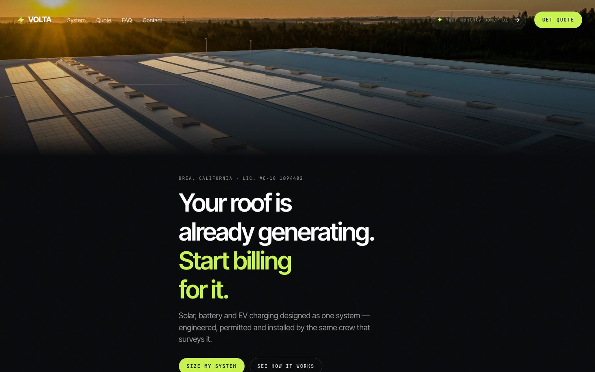
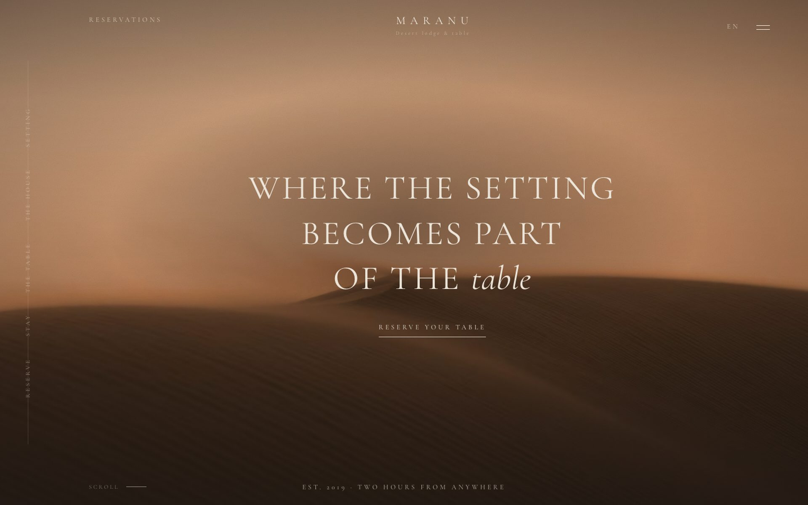
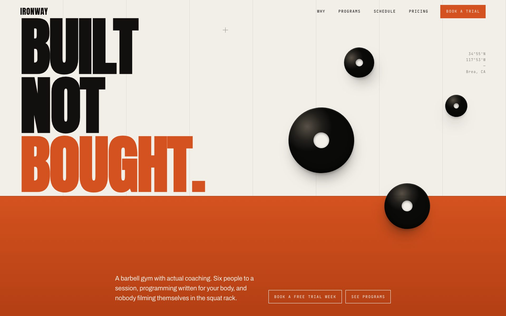

The site that sells, the booking that answers, the follow-up that closes. Built end to end by the person who answers for it.
Every one was built around how that business actually works — the way enquiries arrive, who answers them, what quietly gets missed. Not a template with a logo dropped on it.
Annual revenue created for clients, from systems still running today
$720KCombined monthly revenue across the top six
$60KAutomations running every month, untouched
10,000+Businesses on systems designed and built end to end
50+A stranger becomes a booked, paying client — and it keeps happening while you work.
One call. I map how enquiries actually reach you today — who answers, when, and where they quietly die.
A site and identity that make you the obvious choice before anyone reads a word of it.
Booking, reception, follow-up and reviews — wired to how the business already runs, not the other way round.
Launching isn't the finish line. It gets tuned until the numbers move, and I'm the one still holding it.
Built around how the business actually works. Listed in the order a stranger meets it.
Turns a stranger into a booked job. Not a brochure with your logo on it.
Open at eleven on a Sunday — which is when they actually decide.
Answers in seconds, qualifies, and puts it straight in your diary.
Chases the quiet ones until they either book or say no.
Asks the moment the job lands, while they still mean it.
One message a week. Enquiries, calls, jobs, revenue.
Not screenshots and not a template gallery. Three complete working sites, each built on its own design system, each for a different trade. Use them like a visitor would.

Size a system on the page and the quote writes itself into WhatsApp.

One type family, no buttons, and every photograph on one temperature.

A hard colour seam, and a ticker pulling the gym's real weather.
I'm Martin. Self-taught, no agency pedigree, and better for it. In under two months I took six businesses to ten thousand a month each. That isn't a pitch — it's the record.
Fifty businesses run on systems I designed and built myself, end to end. No account managers, no hand-offs, no work watered down as it passes along a chain. Just the person who built it, answering for it.
Launching isn't the finish line. I'm done when the numbers are going up.
Same-day response. Let's bring you more revenue.
Start a project →